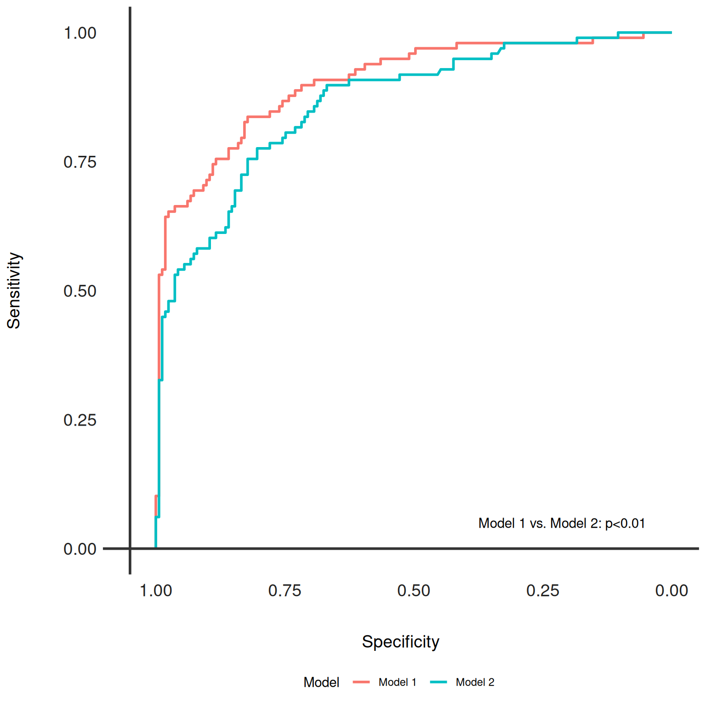

Generates Receiver Operating Characteristic (ROC) curves for multiple models and overlays them for comparison. Optionally, it adds text annotations for DeLong's test results to indicate statistical differences between the models' Area Under the ROC Curve (AUC).
Arguments
- dx_comp
A
dx_compareobject containing the results of pairwise model comparisons and the list ofdxobjects with ROC data.- add_text
Logical, whether to add DeLong's test results as text annotations on the plot. Defaults to TRUE.
- axis_color
Color of the axes lines, specified as a color name or hex code. Defaults to "#333333".
- text_color
Color of the text annotations, specified as a color name or hex code. Defaults to "black".
Value
A ggplot object representing the ROC curves for the models included in the
dx_comp object. Each model's ROC curve is color-coded, and the plot
includes annotations for DeLong's test p-values if add_text is TRUE.
Details
This function is a visualization tool that plots ROC curves for multiple
models to facilitate comparison. It uses DeLong's test to statistically
compare AUC values and, if desired, annotates the plot with the results.
The function expects a dx_compare object as input, which should contain
the necessary ROC and test comparison data. Ensure that the ROC data and
DeLong's test results are appropriately generated and stored in the
dx_compare object before using this function.
See also
dx_compare() to generate the required input object.
dx_delong() for details on DeLong's test used in comparisons.
Examples
dx_glm <- dx(data = dx_heart_failure, true_varname = "truth", pred_varname = "predicted")
dx_rf <- dx(data = dx_heart_failure, true_varname = "truth", pred_varname = "predicted_rf")
dx_list <- list(dx_glm, dx_rf)
dx_comp <- dx_compare(dx_list, paired = TRUE)
dx_plot_rocs(dx_comp)
